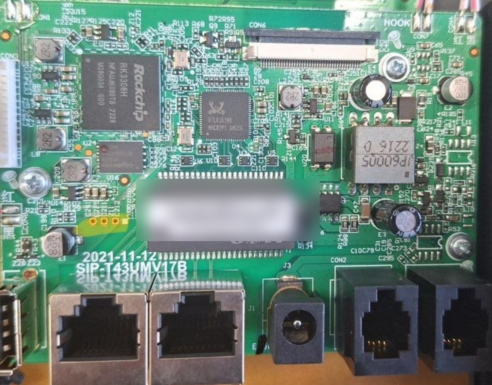
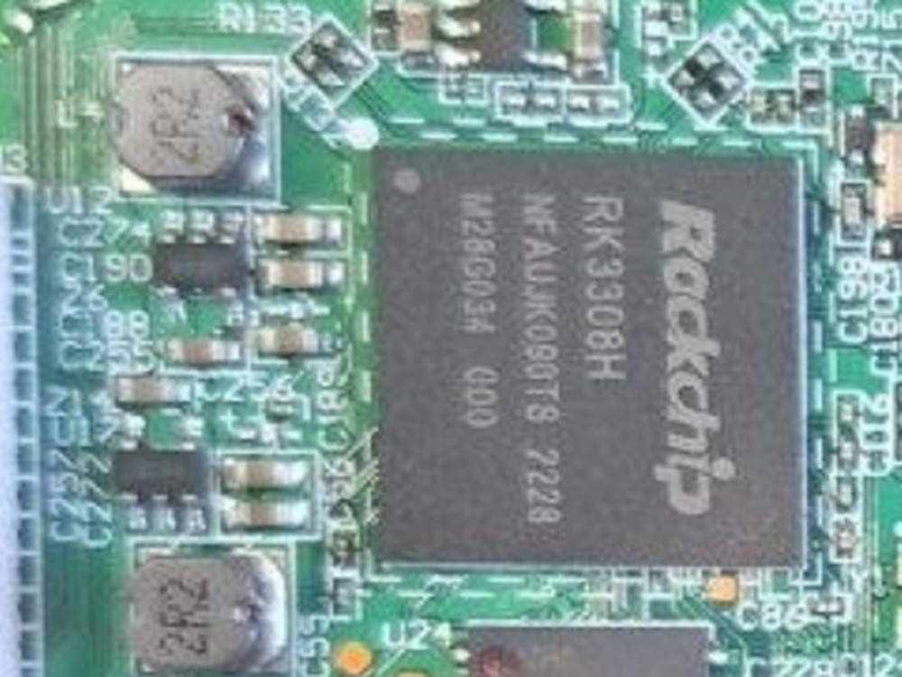
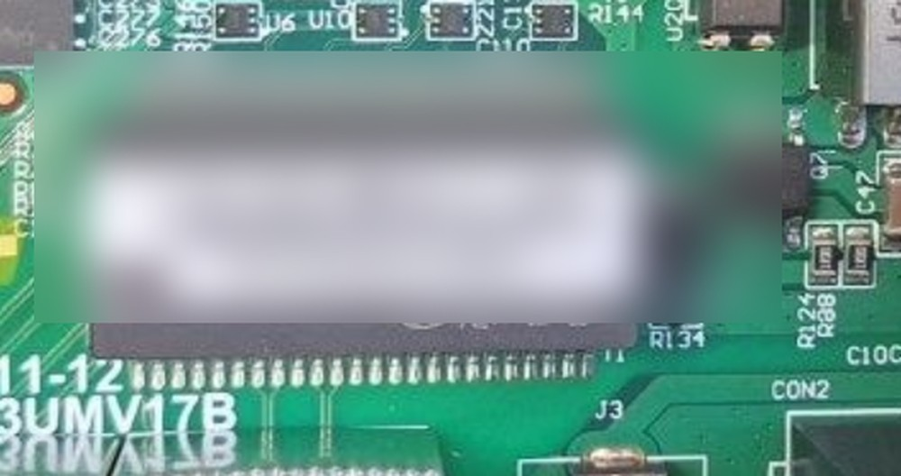

Yealink T4xU — разбор прошивки
Рабочие заметки: что разобрано, что проверено, что осталось и что должен сделать человек с аппаратом.
Аппарат: SIP-T43U · ПО: 108.86.14.4 · SoC: RK3308H · Обновлено: 2026-10-29
Где мы сейчас
Разделы
Статус одной таблицей
| Направление | Состояние | Комментарий |
|---|---|---|
| Формат ROM-пакета | готово | разбор, распаковка, правка, пересборка байт в байт |
| Апдейтер трубки | готово | проверяет только magic / CRC / размеры, ключей нет |
| Пакет-проба (только версия) | собран | ждёт аппарат для проверки приёма |
| Содержимое rootfs | заблокировано | слой ubifs crypto, ключ через MCU Holtek |
| Свои функции в прошивке | заблокировано | нужен ключ ФС либо дамп флеша |
| V87 (AES-256) | не нужно | на трубке 86.x, тяжёлая крипта V87 не задействована |
Где какой ключ нужен
| Что делаем | Нужен ключ |
|---|---|
| залить пересобранный пакет на 86.x | нет — апдейтер проверяет только magic/CRC/размеры |
| прочитать или заменить файлы в ФС | да — слой ubifs crypto, ключ через Holtek |
пакет 87.x с блоком 0x83 |
да — RSA → AES-256, ключ из памяти устройства |
Отсюда порядок: сначала донор и приём пакета, ключ — на следующем шаге.
Что сделано
Формат пакета
Заголовок 128 Б, big-endian. Блоки: version (ELF), rfs (LZMA), bootloader (cypher3). Поле cipher: 0 — как есть, 1 — LZMA, 3 — cypher3, 0x83 — AES-256.
Проверено: пересборка 86.0.118, 87.0.20 и 86.14.4 совпадает с оригиналом побайтово.
Апдейтер
version.elf из 108.86.14.4 байт в байт равен апдейтеру 108.86.0.118: статическая сборка, крипто-импортов нет, проверяются только magic, CRC заголовка и блоков, размер распаковки.
Следствие: подпись содержимого не проверяется, ключи для 86.x не нужны.
Слой ФС
Rootfs — UBI (PEB 128 КиБ, LEB 124 КиБ). Из 342 LEB 324 обёрнуты vendor-узлом 38 26 90 05, 9 — обычные UBIFS-узлы, 6 — стёртые.
Ядро /uImage лежит в том же томе, то есть тоже внутри зашифрованной части.
Эмулятор апдейтера
Собран запускаемый в Unicorn скелет: PIE грузится по адресам, импорты libc/OpenSSL подменяются хуками, вызывается любая функция.
Показал для V87: публичный ключ выводится из памяти устройства (/dev/mem), а не из пакета.
Что осталось и почему стоим
| Задача | Блокер | Чем снимается |
|---|---|---|
| Проверить приём пересобранного пакета | нужен аппарат, на котором допустим кирпич | донорский T43U / T46U |
| Правка содержимого ФС | слой ubifs crypto |
ключ Holtek или дамп флеша |
| Загружаемый образ со своими функциями | нет ни ФС, ни ядра в открытом виде | то же самое |
| Нужен ли патч загрузчика | неизвестно, как U-Boot реагирует на незашифрованную ФС | UART-лог с аппарата |
Как устроен пакет
ver 108.86.14.4 crypto 0x3 len 0x23E29B0 tail 0
version off 0x80 len 0x9CB50 cipher 0 ← ELF-программа
rfs off 0x9CC50 len 0x22E5CDC cipher 1 ← LZMA → UBI
bootloader off 0x23829B0 len 0x60000 cipher 3 ← cypher3 → LOADER + U-Boot
Апдейтер пишет блоки прямо в /dev/mtdN; слой шифрования ФС создаётся не им, а приходит готовым в пакете.
Инструкция человеку с аппаратом
Порядок важен: сначала то, что ничего не ломает. Подробно — на странице Инструкция человеку.
- Не дать обновиться. Не подключать к сети провайдера, отключить Auto Provision и RPS.
- Снять версию. OK → Status: Firmware Version и Hardware Version.
- UART-лог. USB-UART 3.3 В, 115200 8N1, GND общий.
- Если есть
Hit any key to stop autoboot— снятьmtdparts,nand infoи дамп; OOB снимается отдельно. - Если консоли нет — фото маркировки чипа; ничего не выпаивать до подтверждения модели.
- Снять дважды и сравнить SHA-256.

Плата T43U: RK3308H слева, микросхема памяти по центру под наклейкой (наклейка размыта).

SoC RK3308H, маркировка NFAUK0901B 2228.

Кандидат в NAND — TSOP-48 (пины сверху и снизу). Маркировку закрывает наклейка.
Ветки
| Ветка | Что даёт | Зависимость |
|---|---|---|
| A — эмулятор | ключ V87 из кода апдейтера | блоб из /dev/mem с устройства |
| B — дамп флеша | полный образ, патч U-Boot | аппарат, программатор, риск кирпича |
| C — пакет без ключей | пересборка, смена версии, приём пакета | только аппарат для проверки |
D — подмена rfs |
свои файлы в ФС без vendor-формата | ключ Holtek или дамп (ядро тоже в ФС) |
Документы
- Что чем решается — какой способ доступа что даёт и в каком порядке идти
- FINDINGS — что установлено, с пометками «факт / гипотеза»
- BRANCHES — ветки и памятка по аппарату
- PLAN — порядок работ и гейты
- TOOLS — инструменты и проверки
- BRANCH_D — проект подмены
rfs - INSTRUCTION_DUMP — инструкция для человека с аппаратом
- USB и maskrom — как определить четыре контакта USB и попробовать дамп без паяльника
- Прошивка по сети — залить пакет через веб-интерфейс трубки, без UART
- Удалённый доступ — Tailscale: схема и два варианта, как я достаю трубку извне
- Безопасность — изолированная машина, что проверять после сессии
- Что публикуем — что выкладываем, что нет и почему
- Как делали другие — Synacktiv (2019) и WHY2025 (2025): что совпало, что берём